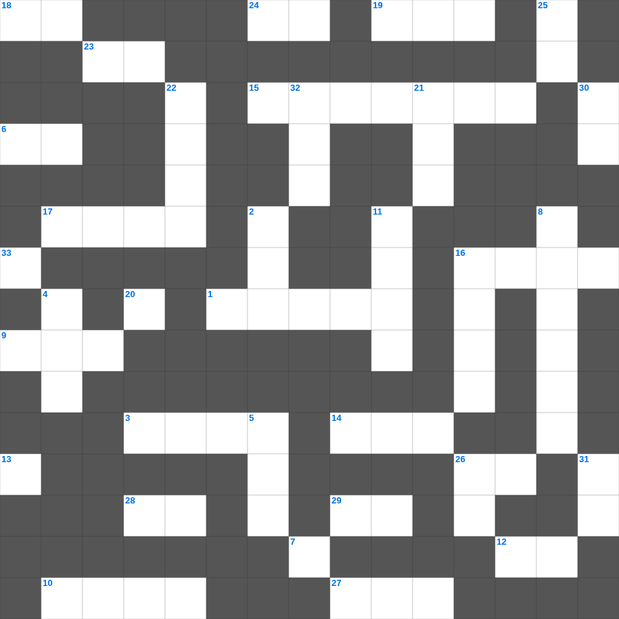

에스겔 마스터 100 (1/2)
📌 서비스 정의
십자가로세로는 교회 주보와 주일학교에서 사용할 수 있는 성경 기반 가로세로 퍼즐 서비스입니다. 성경 인물, 사건, 핵심 구절을 바탕으로 제작되었습니다. 온라인 풀이 및 인쇄 기능을 제공합니다.
📖 에스겔란?
에스겔은 바벨론 포로 중 받은 환상들을 통해 유다의 심판과 회복, 새 성전과 새 마음에 대한 약속을 전한 예언서입니다.
📚 에스겔의 주요 사건·주제
에스겔의 부르심과 소명 · 예루살렘 멸망 예언 · 마른 뼈가 살아나는 환상(에스겔 37장) · 새 성전 환상 · 이스라엘의 회복 예언
무료로 즐기는 에스겔 에스겔 성경공부 자료! 35개의 힌트로 구성된 가로세로 낱말 퍼즐입니다. PC와 모바일 모두 지원되며, 정답을 바로 확인할 수 있어 혼자서도 쉽게 풀 수 있습니다.

📝 가로 힌트
1. 바울의 동역자 부부 중 아내
3. 성벽 재건을 주도한 페르시아 술 관원 출신
6. 그가 징계를 받으므로 우리는 평화를 누리고 그가 이것에 맞으므로 우리는 나음을 받았도다
7. 시드기야 왕이 여호와 보시기에 이것을 행하였더라
9. 여호사밧의 군대 지휘관 중 큰 용사였던 유다 지파 사람
10. 지혜로운 자의 혀는 지식을 선히 베풀고 미련한 자의 입은 이것을 쏟느니라
12. 성령의 9가지 열매 중 세 번째
13. 제사장들이 머리에 쓴 것
14. 에스라 1장부터 10장까지의 전체 기간 (약 몇 년)
15. 욥기 1장의 배경이 된 천상 회의의 참석자들
16. 보라 형제가 연합하여 동거함이 어찌 그리 선하고 이것한고
17. 포기하지 아니하면 때가 이르매 이것으리라
18. 죄를 범한 제사장들이 속죄제로 드린 동물
19. 8세에 왕이 되어 성전을 수리하다 율법책을 발견한 왕
23. 이스라엘이 430년 동안 거주한 나라
24. 여호와의 율법은 완전하여 이것을 소성시키며
26. 예수님이 율법의 완성이라고 하신 것
27. 야곱이 축복을 받기 위해 팔에 붙인 것
28. 다윗이 연주하던 악기
29. 에서와 야곱 중 형의 이름
📝 세로 힌트
2. 제사장은 머리털을 깎아 이것하게 하지 말 것
4. 베드로의 형제, 예수님의 첫 제자
5. 요한의 형제, 세베대의 아들, 첫 순교 사도
8. 제비 뽑아 거룩한 성 예루살렘에 거주하게 된 지파
11. 아브라함의 아내가 죽은 후 묻힌 굴
16. 건축을 방해하던 자들이 아닥사스다 왕에게 보낸 편지의 언어
20. 노아의 아들 중 저주를 받은 자의 아버지
21. 요셉의 아내 이름
22. 성경 최고령 인물(969세)
25. 아닥사스다 왕이 에스라에게 붙여준 칭호 '하늘의 하나님의 이것의 학자'
26. 여호와를 경외하는 자에게는 부족함이 없도다 젊은 이것은 줄여도
30. 가난한 자를 불쌍히 여기는 것은 여호와께 이것 드리는 것이니
31. 하나님의 마음에 합한 자, 이스라엘 2대 왕
32. 사랑하는 자여 네가 무엇이든지 형제 곧 이것 된 자들에게 행하는 것은 신실한 일이니
33. 사랑하는 자들아 너희를 연단하려고 오는 이것 시련을 이상한 일 당하는 것 같이 이상히 여기지 말고
🧩 이 퍼즐에서 배우는 내용
이 퍼즐은 에스겔 마스터 100 (1/2)의 핵심 단어와 개념을 자연스럽게 복습할 수 있도록 구성되었습니다. 주일학교 수업이나 개인 성경공부에서 학습 내용을 점검하는 용도로 바로 활용할 수 있습니다.
🧑🏫 교회 교육 자료 활용
이 퍼즐은 주일학교 교재 추천 자료로 활용할 수 있고, 주일학교 주보에 넣기 좋은 분량으로 구성되어 있습니다. 수업용 주일학교 교안에 활동지로 붙이거나, 예배 후 복습용 주일학교 공과교재로 바로 사용할 수 있습니다.
🏷️ 키워드
에스겔 성경공부 자료, 에스겔, 십자가로세로, 성경퀴즈, 말씀퀴즈, 가로세로퍼즐, 주일학교 교재 추천, 주일학교 주보, 주일학교 교안, 주일학교 공과교재